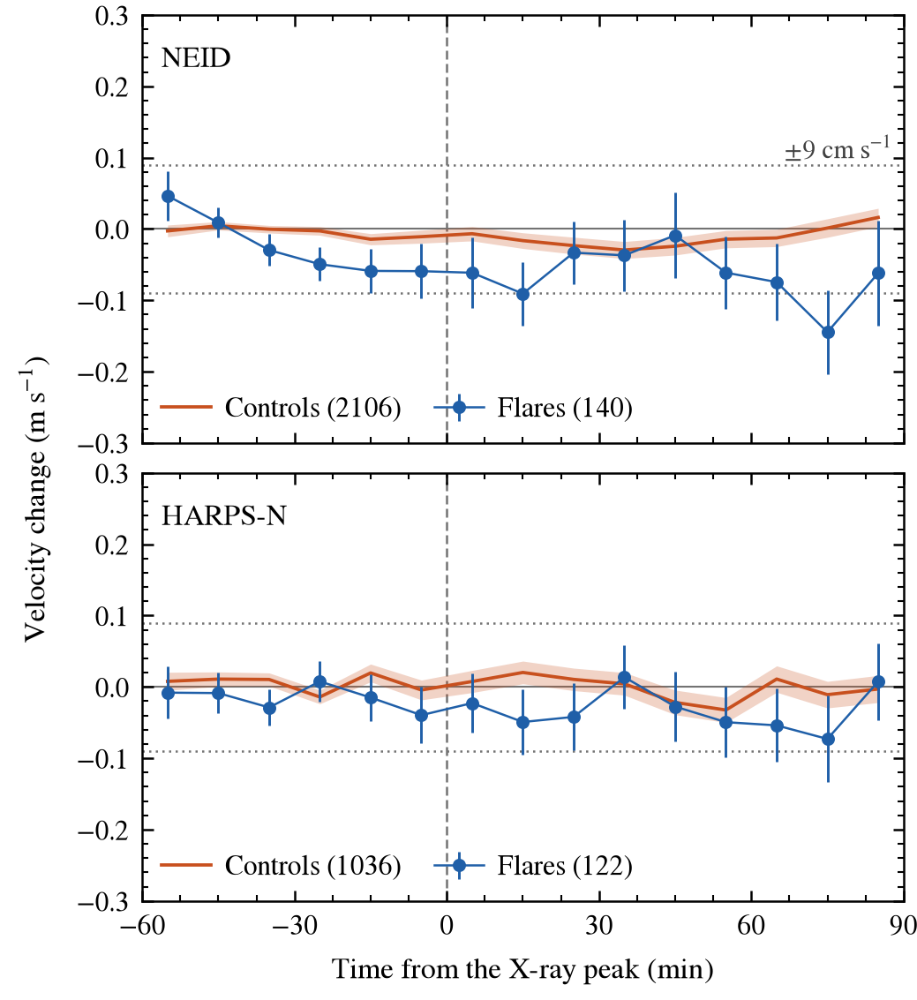
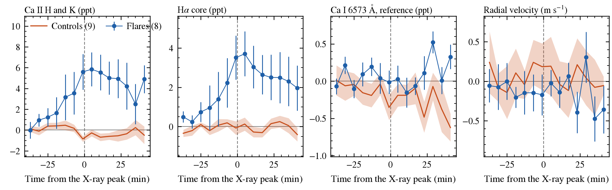
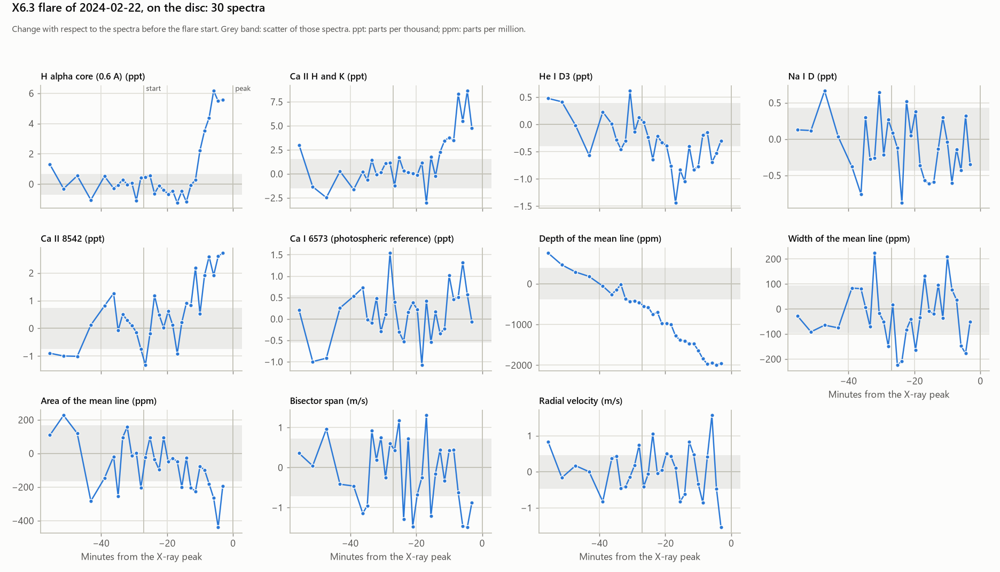

Resultados¶
Estado: noviembre de 2026. La velocidad se mide con dos instrumentos, NEID y HARPS-N. Los espectros son los de NEID: 23 fulguraciones y nueve ventanas de control sin fulguración.
La velocidad del Sol no cambia durante las fulguraciones¶
Dos instrumentos que observaron fulguraciones distintas dan la misma respuesta.

Cambio de la velocidad durante la fulguración, menos el de sus controles, en m/s (entre paréntesis, el número de fulguraciones):
| NEID | HARPS-N | Ambos | Cota al 95 % | |
|---|---|---|---|---|
| Cambio medio, todas las M y X | −0,035 ± 0,035 (139) | −0,021 ± 0,039 (115) | −0,029 ± 0,026 (254) | 0,07 |
| Cambio medio, clase M | −0,032 ± 0,039 (128) | −0,015 ± 0,042 (108) | −0,025 ± 0,028 (236) | 0,07 |
| Cambio medio, clase X | −0,060 ± 0,088 (11) | −0,104 ± 0,127 (7) | −0,074 ± 0,072 (18) | 0,19 |
| Desplazamiento de una X1, S | −0,010 ± 0,061 | −0,005 ± 0,040 | −0,006 ± 0,033 | 0,06 |
| Término de rotación, R | −0,106 ± 0,082 | +0,022 ± 0,043 | −0,006 ± 0,038 | 0,07 |
Juntos, el cambio medio queda por debajo de 0,07 m/s, menos que los 0,09 m/s que la Tierra imprime en el Sol. Las 254 medidas son de 253 fulguraciones distintas: una la observaron los dos instrumentos. Los datos no dan indicios de que las fulguraciones usadas difieran del resto de las M y X. Sus clases y sus posiciones en el disco se distribuyen como las de la lista completa, con probabilidades de Kolmogórov-Smirnov entre 0,04 y 0,96 en las ocho pruebas (clase, dos coordenadas en el disco y distancia a su centro, con cada instrumento). La más baja no es inusual para la menor de ocho pruebas. Con tan pocas fulguraciones como en la fila de la clase X, el propio error es incierto en una cuarta parte.
Tres comprobaciones más dan la misma respuesta:
- Las fulguraciones mayores no desplazan más la velocidad. En las 18 de clase X tampoco se encuentra ningún cambio, pero la cota, 0,19 m/s, es el doble de la señal de la Tierra.
- No hay desplazamientos de signo opuesto que se cancelen en la media. Los cambios de las fulguraciones están tan dispersos como los de los controles: 0,40 m/s en ambos con NEID, 0,40 y 0,41 con HARPS-N.
- No hay firma de rotación. El término de rotación queda por debajo de 0,07 m/s para una X1 en el limbo, lo que equivale a K · ΔF / F < 3,7 × 10⁻⁵ por fulguración X1 (véase Método).

El resultado no depende de las decisiones¶
Con NEID, donde se tomaron las decisiones (HARPS-N se analizó después, una sola vez, con ellas). Todo en m/s:
| Variante | Fulguraciones | Cambio medio | Desplazamiento de una X1 | Término de rotación |
|---|---|---|---|---|
| Por defecto | 139 | −0,035 ± 0,035 | −0,010 ± 0,061 | −0,106 ± 0,082 |
| Tendencia diaria: polinomio de grado 1 | 137 | −0,022 ± 0,036 | −0,015 ± 0,060 | −0,045 ± 0,080 |
| Tendencia diaria: polinomio de grado 3 | 139 | −0,001 ± 0,033 | +0,016 ± 0,049 | −0,079 ± 0,083 |
| Ventana «durante»: 3 min a cada lado de la subida más rápida de los rayos X | 120 | −0,009 ± 0,042 | −0,019 ± 0,061 | −0,108 ± 0,135 |
| Ventana «durante»: primeros 10 min desde el inicio | 134 | −0,040 ± 0,035 | +0,006 ± 0,045 | −0,004 ± 0,080 |
| Ventana «durante»: 5 min a cada lado del máximo en rayos X | 126 | −0,021 ± 0,042 | −0,111 ± 0,085 | −0,134 ± 0,154 |
| Fondo: recta ajustada a ambos lados de la fulguración | 93 | −0,008 ± 0,040 | −0,032 ± 0,070 | −0,002 ± 0,113 |
| Errores: remuestreo de 81 regiones activas en lugar de 111 días | 139 | −0,035 ± 0,035 | −0,010 ± 0,061 | −0,106 ± 0,082 |
Tampoco lo cambian las fulguraciones que se suceden. Sin las 36 que empiezan menos de 45 minutos después del máximo de otra fulguración M o X, el cambio medio de las otras 218, con los dos instrumentos, es de −0,033 ± 0,029 m/s.
Una señal se habría visto¶
Un desplazamiento añadido a las velocidades de NEID, y el que se mide después:
| Añadido | Medido | Probabilidad de detectarlo al 95 % |
|---|---|---|
| 5 cm/s | 4,9 cm/s | 40 % |
| 10 cm/s | 9,8 cm/s | 88 % |
| 20 cm/s | 19,5 cm/s | 100 % |
| 50 cm/s | 48,8 cm/s | 100 % |
Con HARPS-N la misma prueba recupera el 98 %. La probabilidad de detección es la de medir más de 1,645 veces el error, el umbral unilateral del 95 % de confianza, cuando el desplazamiento es el que se recupera. Con los dos instrumentos juntos, un desplazamiento de 10 cm/s común a todas las fulguraciones se habría detectado con una probabilidad del 98 %.
Los mismos espectros sí ven las fulguraciones¶
Un resultado de «no pasa nada» necesita la prueba de que el instrumento estaba mirando. Los espectros la dan: las líneas cromosféricas se abrillantan al subir el flujo de rayos X, alcanzan su máximo unos minutos después del máximo en rayos X y siguen brillantes 40 minutos más tarde. En las ventanas de control se quedan planas, y en esos mismos espectros la velocidad no se mueve.

Respuesta media de las fulguraciones del disco (a menos de 0,9 radios solares del centro), desde 8 minutos antes del máximo en rayos X hasta 10 minutos después:
| Clase X (8 fulguraciones) | M5 a M9 (6 fulguraciones) | Controles (9 ventanas) | |
|---|---|---|---|
| Ca II H y K (partes por mil) | +5,3 ± 1,7 | +2,2 ± 0,4 | 0,0 ± 0,2 |
| H alfa, núcleo (partes por mil) | +3,3 ± 1,1 | +2,0 ± 0,2 | −0,1 ± 0,2 |
| Velocidad (m/s) | −0,11 ± 0,21 | −0,10 ± 0,11 | +0,07 ± 0,27 |
- Las 14 fulguraciones del disco se abrillantan en las dos líneas.
- Las fulguraciones menores responden menos: las de M5 a M9, aproximadamente la mitad que las de clase X.
- Cerca del limbo la respuesta es más débil: +1,7 ± 0,9 en Ca II H y K en cuatro fulguraciones X, +1,4 ± 0,5 en cinco de M5 a M9.
- Las fulguraciones más débiles no se descargaron. Entre M2 y M5 la respuesta de una sola quedaría por debajo del ruido, y estas 14 ya muestran que los espectros ven las fulguraciones.
La tabla fulguración a fulguración es results/spectral_response.csv. Una fulguración en
detalle, la X6.3 del 22 de febrero de 2024, cuyo máximo llegó justo después del último
espectro solar de ese día:

Qué cabía esperar¶
- ¿Cuánto brilla una fulguración en luz visible? En el máximo de una fulguración M2 media el Sol se abrillanta 7 partes por millón, y en la X17 del 28 de octubre de 2003 se abrillantó 264 (Kretzschmar 2011). Esas clases están en la escala antigua de GOES, que llevaba un factor 0,7; en la escala de aquí son entre 11 y 23 partes por millón para una X1. Los dos valores coinciden dentro de un factor dos aunque las fulguraciones difieren en un factor de casi noventa en clase: en promedio el abrillantamiento visible crece con la clase en rayos X, aunque no fulguración a fulguración.
- ¿Cuánto mueve esa luz la velocidad? Como mucho de 2 a 4 cm/s para una X1 en el limbo (K = 1), y menos en el resto.
- ¿Cuánto nos acercamos? La cota de los dos instrumentos juntos es entre 1,6 y 3,5 veces eso. La ausencia de firma de rotación es lo que predice la física; ahora está medida.
- ¿Y las líneas de la propia zona de la fulguración? En imágenes resueltas están desplazadas hasta 200 m/s (Saar et al. 2018). Una diezmilésima del disco desplazada 100 m/s mueve la velocidad de todo el Sol alrededor de 1 cm/s, así que este efecto depende del área de la fulguración, que aquí no se ha estimado. La cota del cambio medio lo limita a partir de los datos.
La respuesta¶
Las fulguraciones solares no contaminan significativamente la detección de análogos terrestres por velocidad radial, por dos razones:
- Mueven muy poco la velocidad: menos de 7 cm/s de media para las fulguraciones M y X en conjunto. En las de clase X solas tampoco se encuentra ningún cambio, pero la cota es de unos 20 cm/s, el doble de la señal de la Tierra.
- Ocupan poco tiempo. Entre diciembre de 2020 y noviembre de 2026, seis años que abarcan la subida y el máximo del ciclo 25, el Sol produjo de media 358 fulguraciones de clase M o X al año, 18 de ellas de clase X. Contando cada fulguración desde su inicio hasta su final en la lista de GOES (19 minutos en la mediana), el Sol pasó el 1,6 % del tiempo en alguna de ellas (el 0,1 % en las de clase X). En 2024, el año más activo, hubo 934 fulguraciones, 52 de ellas de clase X, y el Sol pasó el 3,8 % del tiempo en alguna (el 0,3 % en las de clase X).
Esto se ha demostrado para el Sol, no para las estrellas de tipo solar en general: las estrellas más activas que el Sol, con fulguraciones mayores y más frecuentes, son otro asunto.
Comparación con lo publicado¶
- Velocidad. Pietrow et al. (2024) siguieron con HARPS-N dos fulguraciones de clase X del 6 de septiembre de 2017. No pudieron afirmar una detección: fijaron una cota de 50 cm/s y pidieron un estudio estadístico. Aquí el cambio medio de 253 fulguraciones vistas por dos instrumentos queda por debajo de 7 cm/s. La mayor de sus dos fulguraciones está en la muestra de HARPS-N: su cambio es de −0,01 m/s, con un error de 0,41 m/s por ser una sola.
- Cromosfera. En esas dos fulguraciones Ca II H y K subió más de un 1 %. Aquí Ca II H y K es también el índice más sensible, hasta un 1,7 %.
- Luz de todo el disco. Los estudios de H alfa con espectrógrafos de imagen (Otsu et al. 2022, 2024; Ma et al. 2024) integran una región alrededor de la fulguración y normalizan por el disco. NEID registra la respuesta en la luz de todo el disco, y las ventanas de control dan su suelo de ruido.
Fuera del artículo¶
Un exceso antes de las fulguraciones X de NEID que HARPS-N no ve¶
En los diez minutos que van de 60 a 50 minutos antes del máximo en rayos X, las fulguraciones de clase X observadas por NEID están 0,43 ± 0,10 m/s por encima de la tendencia de su día (19 fulguraciones con datos en ese momento, 17 de ellas positivas). Se vio en las velocidades medias, no se predijo. No aparece en las fulguraciones de clase M de NEID (0,00 ± 0,03 m/s) ni en los controles, y HARPS-N no lo muestra en sus diez fulguraciones X, que son otras: −0,12 ± 0,11 m/s. El origen del rasgo no está claro. Si fuera una propiedad general de las fulguraciones X, la muestra de HARPS-N también debería mostrarlo; que no aparezca apunta al instrumento o al azar, aunque no puede excluirse un origen solar.
Las fulguraciones no aumentan la amplitud de las oscilaciones solares¶
| Magnitud | Fulguraciones | Muestras nulas | Cota al 95 % del exceso |
|---|---|---|---|
| ln(potencia después / antes) | −0,068 | 0,001 ± 0,053 | 0,16 |
| Lo mismo, pesando las frecuencias altas | −0,013 | −0,009 ± 0,060 | 0,10 |
Con NEID queda descartado un aumento medio superior al 8 % en amplitud. Pone a prueba la propuesta de Karoff y Kjeldsen (2008), con la limitación de que la cadencia de 83 s solo llega a 6 mHz.
Lo que falta¶
- Un tercer instrumento, para ver si el exceso anterior a las fulguraciones X es cosa de NEID.